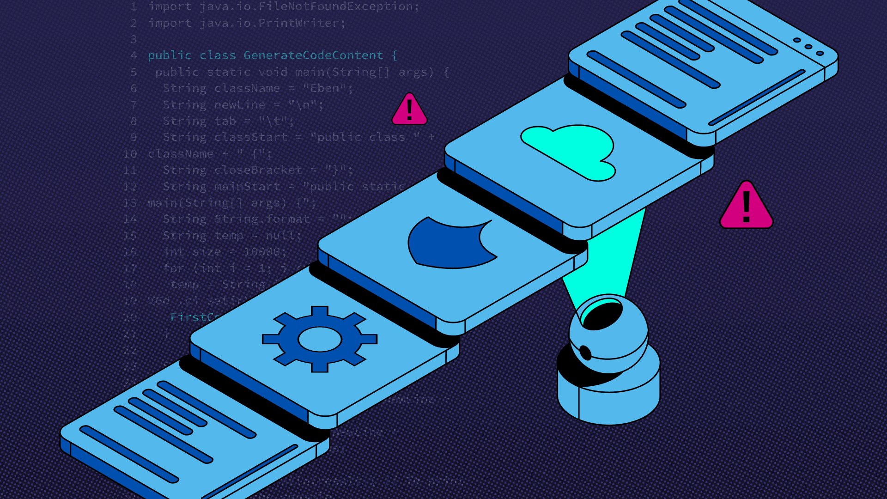

In today's connected world, organizations rely on many third-party services, software, and vendors to operate efficiently. While this improves productivity, it also introduces new risks. One of the most dangerous threats today is the supply chain attack, where attackers target trusted partners instead of directly attacking their main target. This method allows cybercriminals to bypass strong security systems by exploiting weaker links in the chain.
What is a Supply Chain Attack?
A supply chain attack is a type of cyberattack where hackers infiltrate a system through a third-party vendor, software provider, or service. Instead of attacking a company directly, attackers compromise a trusted source and use it to spread malicious code or gain unauthorized access. Because the source is trusted, victims are more likely to accept updates or services without suspicion.
How It Works
Supply chain attacks usually begin by identifying a weak vendor or supplier with less secure systems. Attackers then inject malicious code into software updates, hardware components, or services provided by that supplier. Once the compromised product is distributed, it infects all users who trust and install it. This makes the attack widespread and difficult to detect early.
Real-World Examples
One of the most well-known examples is the SolarWinds attack, where hackers inserted malicious code into a software update used by thousands of organizations, including government agencies. Another example is when attackers compromised popular applications and distributed infected versions to users. These cases show how dangerous supply chain attacks can be due to their large-scale impact.
Impact of Supply Chain Attacks
The impact of supply chain attacks can be severe. Organizations may experience data breaches, financial losses, and damage to their reputation. Sensitive information such as personal data, business secrets, and government records can be exposed. Additionally, recovery from such attacks is complex because multiple systems and partners are involved.
How to Prevent Supply Chain Attacks
Preventing supply chain attacks requires strong security practices. Organizations should carefully evaluate their vendors and ensure they follow strict cybersecurity standards. Regular security audits, software verification, and monitoring for unusual activities are essential. Limiting access permissions and using secure update mechanisms can also reduce risks. For individuals, it is important to download software only from trusted sources and keep systems updated.
Conclusion
Supply chain attacks highlight the importance of security not just within an organization but across all connected partners. As technology continues to evolve, attackers will continue to find new ways to exploit weak links. By staying informed, practicing good cybersecurity habits, and ensuring trust in digital systems, both individuals and organizations can better protect themselves from this growing threat.